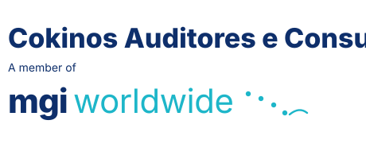

Estrutura Profissional
Tenha o apoio de especialistas cuidando do seu caixa com precisão e ferramentas de alto nível.
BPO Financeiro e consultoria empresarial para empresas que precisam de controle, clareza e previsibilidade nos números.
A FPV Consultoria Empresarial atua com BPO Financeiro e suporte à gestão, ajudando empresas a organizarem suas rotinas financeiras, acompanharem seus números e tomarem decisões com mais segurança.
O foco é tirar o empresário do operacional financeiro e oferecer uma estrutura mais profissional para controle, análise e crescimento.

Consultor Financeiro e Empresarial, Contador e especialista em gestão financeira, controladoria e estruturação de processos empresariais.
Com ampla experiência no mercado, atua há anos apoiando empresas de diferentes segmentos na organização financeira, melhoria de resultados e desenvolvimento estratégico dos negócios.
Ao longo de sua trajetória, construiu sólida experiência como Auditor, Gerente Financeiro, Consultor Empresarial e Professor, participando diretamente da gestão e reestruturação financeira de empresas de pequeno, médio e grande porte.
É fundador da FPV Consultoria Empresarial, empresa especializada em Consultoria Financeira, BPO Financeiro, Controladoria e Planejamento Estratégico, desenvolvendo soluções práticas e personalizadas para empresários que desejam mais controle, eficiência e crescimento sustentável.
Sua atuação é focada na implementação de controles financeiros, gestão de fluxo de caixa, análise de custos, formação de preços, orçamento empresarial, indicadores de desempenho e melhoria de processos internos, sempre com uma visão estratégica e orientada a resultados.
Além da atuação empresarial, também se dedica ao ensino e desenvolvimento profissional nas áreas de contabilidade, finanças e gestão empresarial, compartilhando conhecimento prático voltado à realidade das empresas.
“Transformando processos em resultados extraordinários.”
O BPO Financeiro é a terceirização da rotina financeira da empresa. Com ele, sua empresa ganha organização, acompanhamento e processos mais claros, sem precisar estruturar uma equipe financeira interna completa.
Tenha o apoio de especialistas cuidando do seu caixa com precisão e ferramentas de alto nível.
Entenda exatamente suas margens, receitas e despesas.
Organização e acompanhamento dos pagamentos da empresa para evitar atrasos, multas e falta de controle.
Solicitar orçamento →Controle dos recebimentos, acompanhamento de valores em aberto e suporte para melhorar a previsibilidade financeira.
Solicitar orçamento →Monitoramento das entradas e saídas para dar mais clareza sobre a saúde financeira do negócio.
Solicitar orçamento →Relatório gerencial para entender resultados, margens, despesas e desempenho da empresa com mais clareza.
Solicitar orçamento →Análise dos valores a receber para identificar divergências, atrasos, falhas e oportunidades de melhoria.
Solicitar orçamento →Conferência entre extratos, recebíveis, pagamentos e registros internos para manter os números confiáveis.
Solicitar orçamento →Comparação criteriosa entre extratos bancários e lançamentos internos, eliminando inconsistências e garantindo precisão nos saldos.
Solicitar orçamento →Acompanhamento de KPIs financeiros e operacionais com relatórios visuais que apoiam decisões estratégicas no tempo certo.
Solicitar orçamento →Estruturação do plano de contas, organização cadastral e padronização de lançamentos para uma gestão financeira mais limpa.
Solicitar orçamento →Apoio na organização do faturamento e acompanhamento das informações financeiras da operação.
Solicitar orçamento →Orientação estratégica para melhorar processos, reduzir desorganização e apoiar decisões financeiras.
Solicitar orçamento →Terceirização da rotina financeira para organizar processos, controles, relatórios e apoiar decisões com mais previsibilidade.
Solicitar orçamento →Uma rotina financeira saudável combina nove processos integrados. A FPV estrutura cada um deles para que seu negócio cresça com previsibilidade, controle e dados confiáveis.
Decisões melhores, resultados consistentes e crescimento contínuo.
Planejar hoje para construir o futuro.
Pagar bem é manter relacionamentos saudáveis e o fluxo em dia.
Receber bem é garantir saúde financeira.
Conciliação é segurança e confiabilidade dos números.
Fluxo de caixa é o termômetro do negócio.
Analisar é transformar dados em decisões inteligentes.
Informação de qualidade gera estratégia e crescimento.
A DRE mostra a real performance do seu negócio.
Preço certo, lucro certo e negócio saudável.
Benefícios de ter os processos financeiros organizados
Processos bem definidos. Dados confiáveis. Decisões inteligentes. Resultados extraordinários.

“O trabalho da FPV transmite segurança, clareza e confiança. Francisco une competência técnica, ética e atenção aos detalhes, transformando temas complexos em processos leves, organizados e tranquilos. Recomendo de olhos fechados.”
“Francisco Valente contribuiu em projetos estratégicos com visão analítica, liderança e foco na geração de resultados. Sua experiência em auditoria, consultoria financeira e reorganização empresarial agrega segurança, credibilidade e eficiência às demandas.”
“Profissional comprometido com a empresa, sempre interessado nas frentes que podem alavancar desempenho, organização e resultado, com postura proativa e próxima.”
É a terceirização da rotina financeira da empresa, incluindo controle de pagamentos, recebimentos, fluxo de caixa, relatórios e organização dos processos financeiros.
Sim. Pequenas empresas costumam se beneficiar muito, porque ganham organização financeira sem precisar montar uma equipe interna completa.
Pode substituir ou complementar, dependendo da estrutura da empresa. A FPV adapta o serviço conforme a necessidade do negócio.
A conciliação bancária confronta especificamente os extratos bancários com os lançamentos internos da empresa. Já a conciliação financeira é mais ampla, envolvendo também recebíveis, pagamentos, cartões e demais registros para garantir a integridade dos dados.
É um relatório que mostra o resultado da empresa de forma mais clara, ajudando a entender receitas, custos, despesas e lucro.
Basta clicar em um dos botões da página e chamar a FPV pelo WhatsApp no número (11) 99736-1011 ou enviar um e-mail para contato@fpvconsultoria.com.br.
Fale com a FPV Consultoria e solicite um orçamento para estruturar a rotina financeira do seu negócio com mais clareza, controle e estratégia.
Envie seus dados ou fale diretamente com a consultoria para iniciar a organização financeira da sua empresa.
Falar no WhatsApp